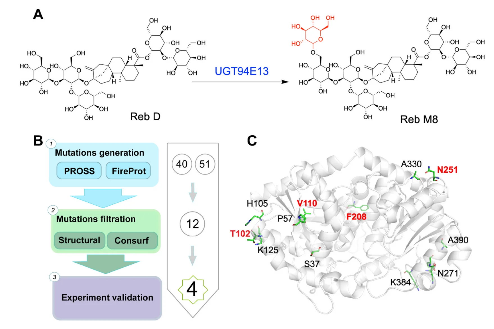
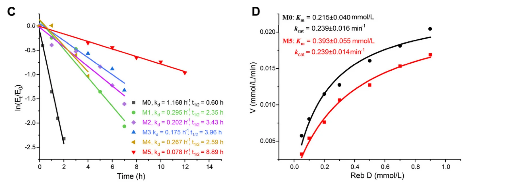
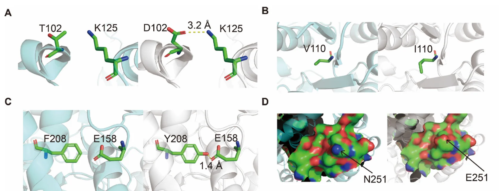
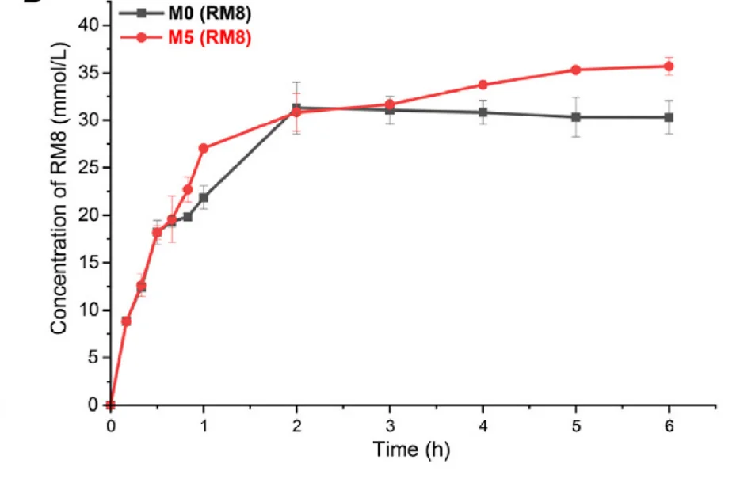

Improving the thermostability of glycosyltransferase UGT94E13 by rational design for highly efficient biosynthesis of rebaudioside M8
Rebaudioside M8 (Reb M8), a high-potency sweetener derived from natural Rebaudioside D found in Stevia rebaudiana, exhibits favorable organoleptic properties as an ideal sugar replacement candidate. However, the industrial biosynthesis of Reb M8 is hindered by the poor thermostability of its key biocatalyst, glycosyltransferase UGT94E13, limiting its application in long-term or high-temperature processes. In this study, a combinatorial strategy integrating computer-aided rational design as well as structural and evolutionary conservation analyses is utilized to enhance the thermostability of a catalytic-efficient UGT94E13-F169G/I185G (M0) to a superior variant M0-T102D/V110I/F208Y/N251E (M5) with a 5.4 °C increase in melting temperature (Tm), a 1.08-fold improvement in catalytic activity, and a 14.8-fold extension of half-life relative to M0. The simultaneous improvement of activity and stability is well explained by molecular dynamics simulations and structural analyses, revealing flexibility reduction, hydrophobic packing improvement, salt bridge formation, and electrostatics optimization as key factors for the improved thermal resilience. Furthermore, in a cascade biocatalytic system coupled with sucrose synthase AtSuSy, M5 enabled sustained biosynthesis and high production of Reb M8 (35.30 g/L) under optimized fed-batch conditions. These findings establish M5 as a robust and scalable biocatalyst that overcomes the inherent activity-stability trade-off of glycosyltransferase UGT94E13, advancing the biomanufacturing potential of promising sweeteners in food and health industries.
The problem
Steviol glycosides are the sweet compounds of the stevia plant (Stevia rebaudiana): a rigid diterpene core carrying several sugar chains. More than 60 of them are known, and the pattern of attached sugars decides how sweet each one tastes and how much bitterness or metallic aftertaste it carries. Rebaudioside M8 (Reb M8) is a semi-synthetic member of this family, made from the natural glycoside rebaudioside D by attaching one more glucose. It is about as sweet as the widely used rebaudioside M, has a cleaner taste profile than rebaudioside D or A, and also inhibits the inflammatory factor TNF-α.
Reb M8 does not occur in the plant in useful amounts, so it is made enzymatically. The enzyme that does this is a glycosyltransferase — an enzyme that moves a sugar from an activated donor molecule onto a specific hydroxyl group of an acceptor. Here, UGT94E13 takes glucose from UDP-glucose (UDPG) and attaches it to rebaudioside D.
An engineered double mutant of this enzyme, UGT94E13-F169G/I185G (called M0), is catalytically efficient but thermally fragile: its melting temperature (Tm, the point at which the folded protein comes apart) is 49.08 °C, and at 45 °C it loses half its activity in 0.60 h. That is a practical problem rather than an academic one. Industrial biocatalysis runs warm, because higher temperature means faster reactions, more soluble substrate and less microbial contamination, and it runs for hours per batch. An enzyme that dies within the first hour forces lower temperatures, much more enzyme per batch, or repeated re-dosing — all of which show up directly in cost.
The usual obstacle is that stability and activity pull against each other. Mutations that stiffen a protein against unfolding often also stiffen the active site, and the catalytic rate drops. This is the activity–stability trade-off the study set out to avoid.
The key idea
Rather than screen a large random library, the study used computational design to propose a small set of point mutations and then filtered that set hard on structural and evolutionary grounds before anything was built in the lab.
- Two automated design servers, PROSS and FireProt, which combine force-field energy calculations with statistics from multiple sequence alignments, proposed 40 and 51 candidate mutations of M0 respectively.
- The two lists were intersected, keeping only positions both methods agreed on.
- Any mutation lying closer than 8 Å to the catalytic pocket was removed, on the grounds that it could disturb catalysis.
- Positions that evolutionary conservation analysis (ConSurf) scored above conservation grade 8 were removed, since highly conserved residues usually matter for function.
- What survived was a list of 12 single-point mutants to express and measure.
The three-dimensional structure used throughout — for the distance filter, for the later mechanistic analysis and for the simulations — was an AlphaFold3 model of UGT94E13, with the top-confidence prediction selected.
How it works

Each of the 12 designs was introduced by overlap-extension PCR, confirmed by Sanger sequencing, expressed in Escherichia coli BL21(DE3) and purified on a nickel affinity column. The purified enzymes were then characterised on four axes: melting temperature by differential scanning calorimetry; relative activity, measured as the amount of Reb M8 formed from rebaudioside D and UDPG and quantified by liquid chromatography; optimal reaction temperature and pH; and half-life at 45 °C.
Mutations were kept only if they passed both tests — a Tm gain above 1 °C and at least 90 % of the parent's activity. The survivors were then stacked one at a time in order of their individual Tm gain, a greedy combination strategy, giving combinatorial variants M1 through M5.
What it found
Eleven of the twelve single mutants raised Tm; only N271E did not. Five gained more than 1 °C: F208Y (+2.75 °C), T102D (+1.41), V110I (+1.31), P57L (+1.04) and N251E (+1.03). P57L was dropped because its activity fell to 59 % of the parent; the other four retained 94–105 %.
The quadruple variant M5 (M0 plus T102D/V110I/F208Y/N251E) was the best of the combinations: Tm up 5.40 °C, optimal reaction temperature up from 35 to 40 °C, and half-life at 45 °C of 8.89 h against 0.60 h for M0, a 14.8-fold extension. Its relative activity was 108 % of M0. Stacking was not automatically additive: M1 and M3 were also more stable but kept only 60 % and 74 % of parent activity.

Steady-state kinetics showed where the cost landed. The turnover number kcat was unchanged (0.239 min−1 for both enzymes), but the Michaelis constant Km for rebaudioside D rose from 0.215 to 0.393 mmol/L — the more rigid variant binds its substrate less tightly, even though its measured activity under assay conditions was slightly higher.
Structural comparison attributed the stability gain to four different physical effects, one per mutation, spread over the protein rather than concentrated in one region.

100 ns molecular dynamics simulations of M0 and M5, each with UDPG and rebaudioside D bound, supported this. Both systems equilibrated, and M5 showed consistently lower root-mean-square fluctuation per residue, meaning less local motion. Two catalytically relevant distances also shortened in M5: from His13 Nε to the rebaudioside D C6 hydroxyl hydrogen, 6.05 Å down to 5.00 Å; and from the UDPG anomeric carbon to that same oxygen, 7.83 Å down to 4.74 Å. A geometry closer to the reactive arrangement offers a reason why activity rose rather than fell.
Why it matters
The practical test was a two-enzyme cascade. UDP-glucose is expensive to supply stoichiometrically, so sucrose synthase AtSuSy from Arabidopsis thaliana was co-expressed to regenerate it from cheap sucrose, and the reaction conditions were optimised to pH 7.5 in potassium phosphate, 45 °C and 500 mmol/L sucrose.

Over a 6 h fed-batch run the two enzymes diverge exactly where thermostability predicts. M0 begins losing activity between 0.5 and 2 h and flatlines at 31.28 g/L. M5 matches it for the first hour, then continues at a slower rate out to 5 h and finishes at 35.30 g/L — roughly a 2.5-fold longer productive lifetime.
The broader point is methodological. A computational pipeline that proposes many mutations is only useful if the ones you actually build are likely to work; intersecting two independent predictors and then removing anything near the active site or evolutionarily conserved cut the experimental burden to twelve constructs and still produced a variant that gains stability while keeping its measured activity.
Cite
@article{jiang2025ugt94e13,
title = {Improving the thermostability of glycosyltransferase UGT94E13 by rational design for highly efficient biosynthesis of rebaudioside M8},
author = {Jiang, Hua and Li, Guangyao and Zhang, Weilun and Deng, Zhiwei and Yang, Mengliang and Liu, Changmei and Luo, Zhengshan and Zhang, Yan and Rao, Yijian and Yuan, Zhenbo},
journal = {Food Bioscience},
volume = {73},
pages = {107682},
year = {2025},
issn = {2212-4292},
doi = {10.1016/j.fbio.2025.107682}
}